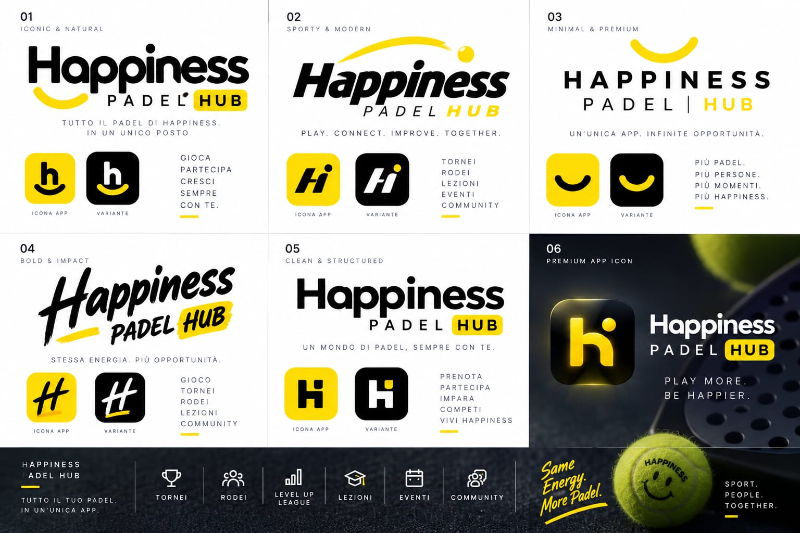

Riferimento originale

Crop non alterato dell’immagine allegata: pannello superiore destro, riferimento 03.
Happiness SPASH Contest · reference 03
Una sola prova fedele del pannello “03 · Minimal & Premium”. Il riferimento originale resta intatto e viene confrontato alla stessa scala con una ricostruzione isolata.

Crop non alterato dell’immagine allegata: pannello superiore destro, riferimento 03.
Lettering ricostruito con tipografia sans uppercase, tracking controllato e smile SVG custom. Nessun contenuto aggiunto.